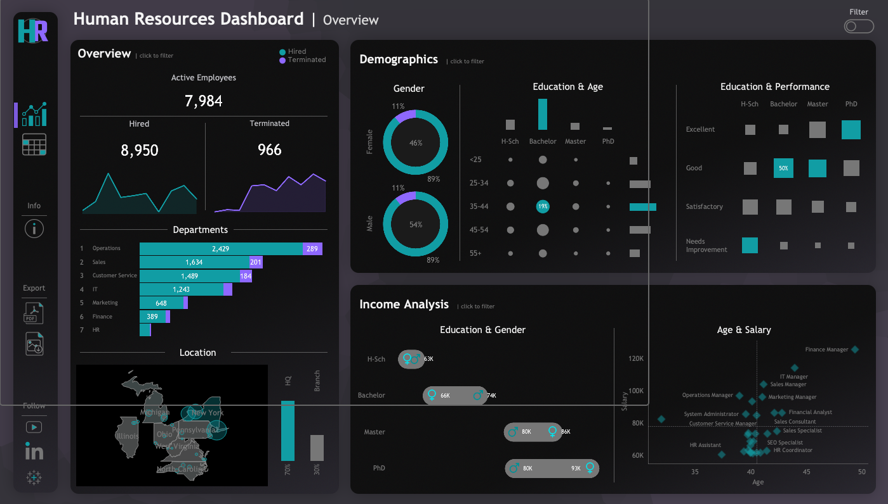
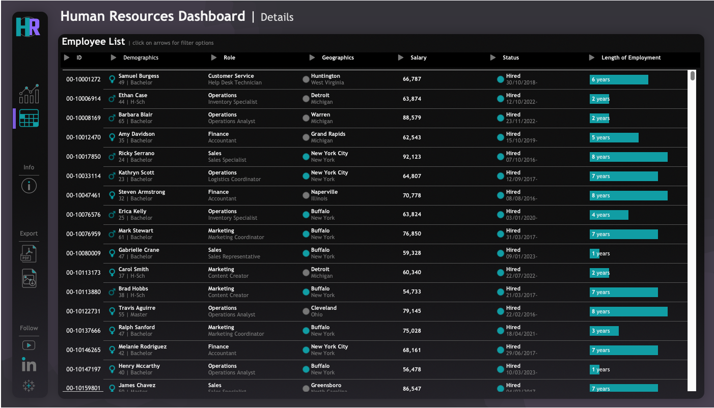

Human Resources Dashboard
This project consists of elaborating a highly interactive Tableau dashboard using mock data that mimics a Human Resources department type of data. The created dashboard is designed to follow specific requirements that could be asked by an HR department (described bellow), to achieve both a summary and a detailed view of the data. The dashboard is highly interactive, with filters and elaborated tooltips to obtain more information when hovering over each chart.


About the Data
The dataset consists of 8950 records that simulates a set of employee information typically found in HR systems, including: demographics, job details, salary, performance evaluations, and attrition data. The dataset was generated by prompting Chat-GPT for a python script, using the Faker library, with the following attributes:
- Employee ID: A unique identifier.
- First Name: Randomly generated.
- Last Name: Randomly generated.
- Gender: Randomly chosen with a 46% probability for ‘Female’ and a 54% probability for ‘Male’.
- State and City: Randomly assigned from a predefined list of states and their cities.
- Hire Date: Randomly generated with custom probabilities for each year from 2015 to 2024.
- Department: Randomly chosen from a list of departments with specified probabilities.
- Job Title: Randomly selected based on the department, with specific probabilities for each job title within the department.
- Education Level: Determined based on the job title, chosen from a predefined mapping of job titles to education levels.
- Performance Rating: Randomly selected from ‘Excellent’, ‘Good’, ‘Satisfactory’, ‘Needs Improvement’ with specified probabilities.
- Overtime: Randomly chosen with a 30% probability for ‘Yes’ and a 70% probability for ‘No’.
- Salary: Generated based on the department and job title, within specific ranges.
- Birth Date: Generated based on age group distribution and job title requirements, ensuring consistency with the hire date.
- Termination Date: Assigned to a subset of employees (11.2% of the total) with specific probabilities for each year from 2015 to 2024, ensuring the termination date is at least 6 months after the hire date.
- Adjusted Salary: Calculated based on gender, education level, and age, applying specific multipliers and increments.
Python Script
The used python script is the following:
import pandas as pd
import numpy as np
from faker import Faker
from datetime import datetime, timedelta
import random
# Initialize Faker
fake = Faker('en_US')
Faker.seed(42)
np.random.seed(42)
random.seed(42)
# Configuration
num_records = 8950
# States & Cities
states_cities = {
'New York': ['New York City', 'Buffalo', 'Rochester'],
'Virginia': ['Virginia Beach', 'Norfolk', 'Richmond'],
'Florida': ['Miami', 'Orlando', 'Tampa'],
'Illinois': ['Chicago', 'Aurora', 'Naperville'],
'Pennsylvania': ['Philadelphia', 'Pittsburgh', 'Allentown'],
'Ohio': ['Columbus', 'Cleveland', 'Cincinnati'],
'North Carolina': ['Charlotte', 'Raleigh', 'Greensboro'],
'Michigan': ['Detroit', 'Grand Rapids', 'Warren']
}
states = list(states_cities.keys())
state_prob = [0.7, 0.02, 0.01, 0.03, 0.05, 0.03, 0.05, 0.11]
assigned_states = np.random.choice(states, size=num_records, p=state_prob)
assigned_cities = [np.random.choice(states_cities[state]) for state in assigned_states]
# Departments & Jobtitles
departments = ['HR', 'IT', 'Sales', 'Marketing', 'Finance', 'Operations', 'Customer Service']
departments_prob = [0.02, 0.15, 0.21, 0.08, 0.05, 0.30, 0.19]
jobtitles = {
'HR': ['HR Manager', 'HR Coordinator', 'Recruiter', 'HR Assistant'],
'IT': ['IT Manager', 'Software Developer', 'System Administrator', 'IT Support Specialist'],
'Sales': ['Sales Manager', 'Sales Consultant', 'Sales Specialist', 'Sales Representative'],
'Marketing': ['Marketing Manager', 'SEO Specialist', 'Content Creator', 'Marketing Coordinator'],
'Finance': ['Finance Manager', 'Accountant', 'Financial Analyst', 'Accounts Payable Specialist'],
'Operations': ['Operations Manager', 'Operations Analyst', 'Logistics Coordinator', 'Inventory Specialist'],
'Customer Service': ['Customer Service Manager', 'Customer Service Representative', 'Support Specialist', 'Help Desk Technician']
}
jobtitles_prob = {
'HR': [0.03, 0.3, 0.47, 0.2], # HR Manager, HR Coordinator, Recruiter, HR Assistant
'IT': [0.02, 0.47, 0.2, 0.31], # IT Manager, Software Developer, System Administrator, IT Support Specialist
'Sales': [0.03, 0.25, 0.32, 0.4], # Sales Manager, Sales Consultant, Sales Specialist, Sales Representative
'Marketing': [0.04, 0.25, 0.41, 0.3], # Marketing Manager, SEO Specialist, Content Creator, Marketing Coordinator
'Finance': [0.03, 0.37, 0.4, 0.2], # Finance Manager, Accountant, Financial Analyst, Accounts Payable Specialist
'Operations': [0.02, 0.2, 0.4, 0.38], # Operations Manager, Operations Analyst, Logistics Coordinator, Inventory Specialist
'Customer Service': [0.04, 0.3, 0.38, 0.28] # Customer Service Manager, Customer Service Representative, Support Specialist, Help Desk Technician
}
# Educations
educations = ['High School', "Bachelor", "Master", 'PhD']
education_mapping = {
'HR Manager': ["Master", "PhD"],
'HR Coordinator': ["Bachelor", "Master"],
'Recruiter': ["High School", "Bachelor"],
'HR Assistant': ["High School", "Bachelor"],
'IT Manager': ["PhD", "Master"],
'Software Developer': ["Bachelor", "Master"],
'System Administrator': ["Bachelor", "Master"],
'IT Support Specialist': ["High School", "Bachelor"],
'Sales Manager': ["Master","PhD"],
'Sales Consultant': ["Bachelor", "Master", "PhD"],
'Sales Specialist': ["Bachelor", "Master", "PhD"],
'Sales Representative': ["Bachelor"],
'Marketing Manager': ["Bachelor", "Master","PhD"],
'SEO Specialist': ["High School", "Bachelor"],
'Content Creator': ["High School", "Bachelor"],
'Marketing Coordinator': ["Bachelor"],
'Finance Manager': ["Master", "PhD"],
'Accountant': ["Bachelor"],
'Financial Analyst': ["Bachelor", "Master", "PhD"],
'Accounts Payable Specialist': ["Bachelor"],
'Operations Manager': ["Bachelor", "Master"],
'Operations Analyst': ["Bachelor", "Master"],
'Logistics Coordinator': ["Bachelor"],
'Inventory Specialist': ["High School", "Bachelor"],
'Customer Service Manager': ["Bachelor", "Master", "PhD"],
'Customer Service Representative': ["High School", "Bachelor"],
'Support Specialist': ["High School", "Bachelor"],
'Customer Success Manager': ["Bachelor", "Master", "PhD"],
'Help Desk Technician': ["High School", "Bachelor"]
}
# Hiring Date
# Define custom probability weights for each year
year_weights = {
2015: 5, # 15% probability
2016: 8, # 15% probability
2017: 17, # 20% probability
2018: 9, # 15% probability
2019: 10, # 10% probability
2020: 11, # 10% probability
2021: 5, # 8% probability
2022: 12, # 5% probability
2023: 14, # 2% probability
2024: 9 # 2% probability
}
# Generate a random date based on custom probabilities
def generate_custom_date(year_weights):
year = random.choices(list(year_weights.keys()), weights=list(year_weights.values()))[0]
month = random.randint(1, 12)
day = random.randint(1, 28) # Assuming all months have 28 days for simplicity
return fake.date_time_between(start_date=datetime(year, 1, 1), end_date=datetime(year, 12, 31))
def generate_salary(department, job_title):
salary_dict = {
'HR': {
'HR Manager': np.random.randint(60000, 90000),
'HR Coordinator': np.random.randint(50000, 60000),
'Recruiter': np.random.randint(50000, 70000),
'HR Assistant': np.random.randint(50000, 60000)
},
'IT': {
'IT Manager': np.random.randint(80000, 120000),
'Software Developer': np.random.randint(70000, 95000),
'System Administrator': np.random.randint(60000, 90000),
'IT Support Specialist': np.random.randint(50000, 60000)
},
'Sales': {
'Sales Manager': np.random.randint(70000, 110000),
'Sales Consultant': np.random.randint(60000, 90000),
'Sales Specialist': np.random.randint(50000, 80000),
'Sales Representative': np.random.randint(50000, 70000)
},
'Marketing': {
'Marketing Manager': np.random.randint(70000, 100000),
'SEO Specialist': np.random.randint(50000, 80000),
'Content Creator': np.random.randint(50000, 60000),
'Marketing Coordinator': np.random.randint(50000, 70000)
},
'Finance': {
'Finance Manager': np.random.randint(80000, 120000),
'Accountant': np.random.randint(50000, 80000),
'Financial Analyst': np.random.randint(60000, 90000),
'Accounts Payable Specialist': np.random.randint(50000, 60000)
},
'Operations': {
'Operations Manager': np.random.randint(70000, 100000),
'Operations Analyst': np.random.randint(50000, 80000),
'Logistics Coordinator': np.random.randint(50000, 60000),
'Inventory Specialist': np.random.randint(50000, 60000)
},
'Customer Service': {
'Customer Service Manager': np.random.randint(60000, 90000),
'Customer Service Representative': np.random.randint(50000, 60000),
'Support Specialist': np.random.randint(50000, 60000),
'Help Desk Technician': np.random.randint(50000, 80000)
}
}
return salary_dict[department][job_title]
# Generate the dataset
data = []
for _ in range(num_records):
employee_id = f"00-{random.randint(10000000, 99999999)}"
first_name = fake.first_name()
last_name = fake.last_name()
gender = np.random.choice(['Female', 'Male'], p=[0.46, 0.54])
state = np.random.choice(states, p=state_prob)
city = np.random.choice(states_cities[state])
hiredate = generate_custom_date(year_weights)
#termdate
department = np.random.choice(departments, p=departments_prob)
job_title = np.random.choice(jobtitles[department], p=jobtitles_prob[department])
education_level = np.random.choice(education_mapping[job_title])
performance_rating = np.random.choice(['Excellent', 'Good', 'Satisfactory', 'Needs Improvement'], p=[0.12, 0.5, 0.3, 0.08])
overtime = np.random.choice(['Yes', 'No'], p=[0.3, 0.7])
salary = generate_salary(department, job_title)
data.append([
employee_id,
first_name,
last_name,
gender,
state,
city,
hiredate,
department,
job_title,
education_level,
salary,
performance_rating,
overtime
])
## Create DataFrame
columns = [
'employee_id',
'first_name',
'last_name',
'gender',
'state',
'city',
'hiredate',
'department',
'job_title',
'education_level',
'salary',
'performance_rating',
'overtime'
]
df = pd.DataFrame(data, columns=columns)
# Add Birthdate
def generate_birthdate(row):
age_distribution = {
'under_25': 0.11,
'25_34': 0.25,
'35_44': 0.31,
'45_54': 0.24,
'over_55': 0.09
}
age_groups = list(age_distribution.keys())
age_probs = list(age_distribution.values())
age_group = np.random.choice(age_groups, p=age_probs)
if any('Manager' in title for title in row['job_title']):
age = np.random.randint(30, 65)
elif row['education_level'] == 'PhD':
age = np.random.randint(27, 65)
elif age_group == 'under_25':
age = np.random.randint(20, 25)
elif age_group == '25_34':
age = np.random.randint(25, 35)
elif age_group == '35_44':
age = np.random.randint(35, 45)
elif age_group == '45_54':
age = np.random.randint(45, 55)
else:
age = np.random.randint(56, 65)
birthdate = fake.date_of_birth(minimum_age=age, maximum_age=age)
return birthdate
# Apply the function to generate birthdates
df['birthdate'] = df.apply(generate_birthdate, axis=1)
# Terminations
# Define termination distribution
year_weights = {
2015: 5,
2016: 7,
2017: 10,
2018: 12,
2019: 9,
2020: 10,
2021: 20,
2022: 10,
2023: 7,
2024: 10
}
# Calculate the total number of terminated employees
total_employees = num_records
termination_percentage = 0.112 # 11.2%
total_terminated = int(total_employees * termination_percentage)
# Generate termination dates based on distribution
termination_dates = []
for year, weight in year_weights.items():
num_terminations = int(total_terminated * (weight / 100))
termination_dates.extend([year] * num_terminations)
# Randomly shuffle the termination dates
random.shuffle(termination_dates)
# Assign termination dates to terminated employees
terminated_indices = df.index[:total_terminated]
for i, year in enumerate(termination_dates[:total_terminated]):
df.at[terminated_indices[i], 'termdate'] = datetime(year, 1, 1) + timedelta(days=random.randint(0, 365))
# Assign None to termdate for employees who are not terminated
df['termdate'] = df['termdate'].where(df['termdate'].notnull(), None)
# Ensure termdate is at least 6 months after hiredat
df['termdate'] = df.apply(lambda row: row['hiredate'] + timedelta(days=180) if row['termdate'] and row['termdate'] < row['hiredate'] + timedelta(days=180) else row['termdate'], axis=1)
education_multiplier = {
'High School': {'Male': 1.03, 'Female': 1.0},
"Bachelor": {'Male': 1.115, 'Female': 1.0},
"Master": {'Male': 1.0, 'Female': 1.07},
'PhD': {'Male': 1.0, 'Female': 1.17}
}
# Function to calculate age from birthdate
def calculate_age(birthdate):
today = pd.Timestamp('today')
age = today.year - birthdate.year - ((today.month, today.day) < (birthdate.month, birthdate.day))
return age
# Function to calculate the adjusted salary
def calculate_adjusted_salary(row):
base_salary = row['salary']
gender = row['gender']
education = row['education_level']
age = calculate_age(row['birthdate'])
# Apply education multiplier
multiplier = education_multiplier.get(education, {}).get(gender, 1.0)
adjusted_salary = base_salary * multiplier
# Apply age increment (between 0.1% and 0.3% per year of age)
age_increment = 1 + np.random.uniform(0.001, 0.003) * age
adjusted_salary *= age_increment
# Ensure the adjusted salary is not lower than the base salary
adjusted_salary = max(adjusted_salary, base_salary)
# Round the adjusted salary to the nearest integer
return round(adjusted_salary)
# Apply the function to the DataFrame
df['salary'] = df.apply(calculate_adjusted_salary, axis=1)
# Convert 'hiredate' and 'birthdate' to datetime
df['hiredate'] = pd.to_datetime(df['hiredate']).dt.date
df['birthdate'] = pd.to_datetime(df['birthdate']).dt.date
df['termdate'] = pd.to_datetime(df['termdate']).dt.date
print(df)
# Save to CSV
df.to_csv('HumanResources.csv', index=False)The file HumanResources.csv was imported into Tableau Public to make the visualizations.
Dashboard
The dashboard was designed in order to provide summary views for high-level insights and detailed employee records for in-depth analysis according to the following instructions:
1. Summary View
The summary view should be divided into three main sections: Overview, Demographics, and Income Analysis.
Overview
The Overview section should provide a snapshot of the overall HR metrics, including:
- Display the total number of hired employees, active employees, and terminated employees.
- Visualize the total number of hired and terminated employees over the years.
- Present a breakdown of total employees by department and job titles.
- Compare total employees between headquarters (HQ) and branches (New York is the HQ)
- Show the distribution of employees by city and state.
Demographics
The Demographics section should offer insights into the composition of the workforce, including:
- Present the gender ratio in the company.
- Visualize the distribution of employees across age groups and education levels.
- Show the total number of employees within each age group.
- Show the total number of employees within each education level.
- Present the correlation between employees’s educational backgrounds and their performance ratings.
Income
The income analysis section should focus on salary-related metrics, including:
- Compare salaries across different education levels for both genders to identify any discrepancies or patterns.
- Present how the age correlate with the salary for employees in each department.
2. Employee Records View
- Provide a comprehensive list of all employees with necessary information such as name, department, position, gender, age, education, and salary.
- Users should be able to filter the list based on any of the available columns.
The dashboard has a navigation panel (left side) with buttons to change between the Summary and the Employee Records view. Both views have interactive filters that can be opened with buttons and by clicking on the charts. You can hover over the graphs to get more information about the each metric. Several calculated fields were required to make the different visualizations, such as the “Hired” or “Terminated” status, the length of hire, age groups, etc.
In regards to the aesthetic design of the dashboard, the final look was achieved by using a background image to get the rounded corners and the color fading of each panel. I used Pixelmator Pro, but it can be done with any other similar software (i.e. Figma, Illustrator, Inkscape, etc.).
To get a better view of the dashboard you can click the “full screen” button on the bottom right corner.

*This project was done with the help of an amazing tutorial done by the YouTube channel DataWithBaraa.